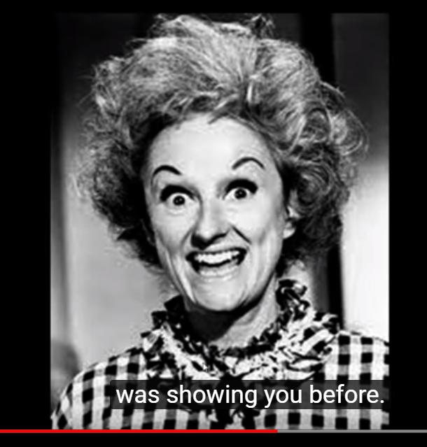
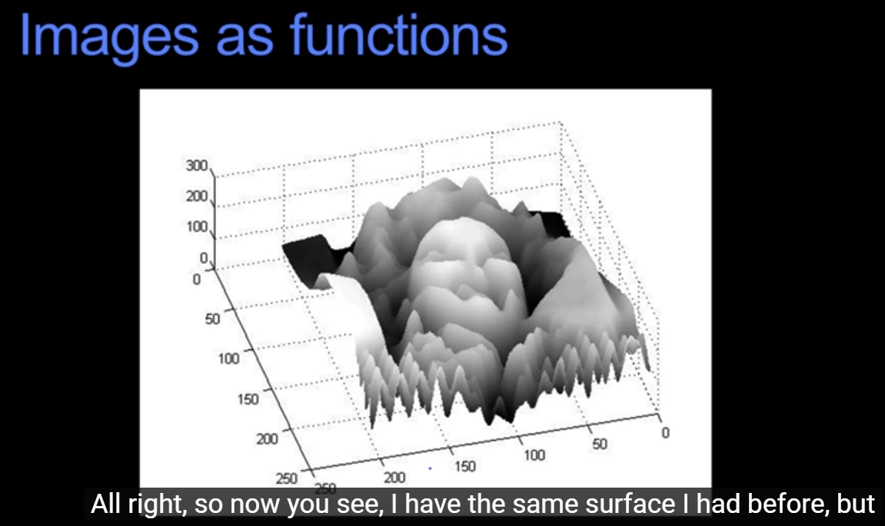
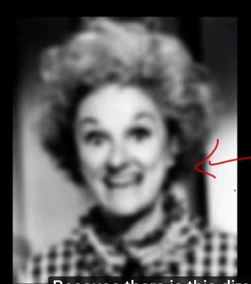
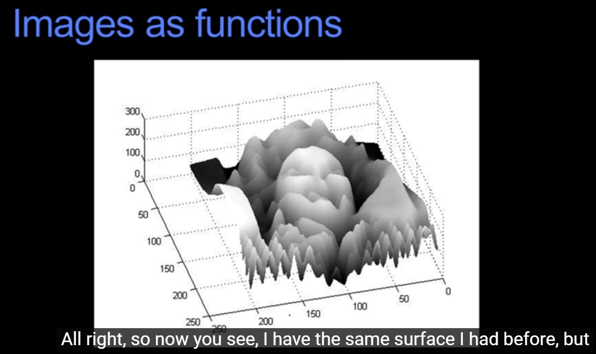
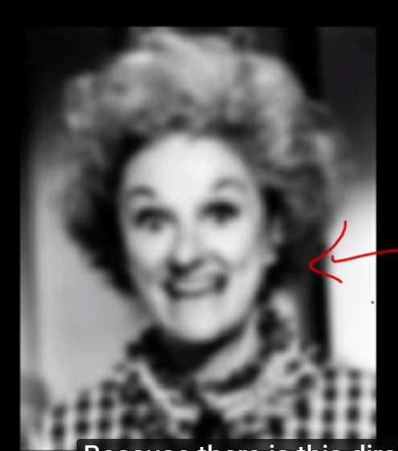

--
分类的指标分析
我们如何看待一张图片？
这里提供一种方法，就是把他看作 关于位置的函数，img = f (x, y), x 和 y 是在两个方向上像素点的位置。
f 是像素的值，如果一张灰度图的话。而如果是一张彩色图，那么 f 就会有 ( r, g, b) 三个值。
如下图，从左到右是 1. 原始灰度照片， 2. 作为值的 f (x, y) 函数图 3. 对图像做平滑处理，也就是相当于对 f(x, y) 进行进一步函数作用之后的值分布图。

 



把图像作为i一个函数来考虑，f : [a, b] x [c, d] -> [min, max]
其中，a 和 b 是左右范围，c 和 d 是上下范围，min 是 0，max 是 255
由于img 的数值是 0 到 255 的整数，所以我们会用一个 unsigned int8 来存储。
unsigned int8 所能表示的最大的数是： 2 ^8 = 256
1. 如何读入图像？
下面给出一段例子。
import matplotlib.pyplot as plt
import matplotlib.image as mpimg
import numpy as np
import cv2
image = mpimg.imread('computer_vision/test.jpg')
print('this image is: ', type(image), 'widht dimention: ', image.shape)
plt.imshow(image)
plt.show()
import math
def grayscale(img):
return cv2.cvtColor(img, cv2.COLOR_RGB2GRAY)
def canny(img, low_threshold, high_threshold):
return cv2.Canny(img, low_threshold, high_threshold)
def gaussion_blur(img, kernel_size):
return cv2.GaussianBlur(img, (kernel_size, kernel_size), 0)
def region_of_interest(img, vertices):
mask = np.zeros_like(img)
if len(img.shape) > 2:
channel_count = img.shape[2]
ignore_mask_color = (255,)*channel_count
else:
ignore_mask_color = 255
cv2.fillPoly(mask, vertices, ignore_mask_color)
masked_image = cv2.bitwise_and(img, mask)
return masked_image
def draw_lines(img, lines, color = [250, 0 ,0], thickness = 2):
for line in lines:
for x1, y1, x2, y2 in line:
cv2.line(img, (x1, y1), (x2, y2), color, thickness)
def hough_lines(img, rho, theta, threshold, min_line_len, max_line_gap):
lines = cv2.HoughLinesP(img, rho, theta, threshold, np.array([]),
minLineLength = min_line_len, maxLineGap = max_line_gap)
line_img = np.zeros((img.shape[0], img.shape[1], 3), dtype = np.unit8)
draw_lines(line_img, lines)
return line_img
def weighted_img(img, initial_img, w1 = 0.8, w2 = 1.0, b = 0.0):
return cv2.addWeighted(initial_img,w1,img, w2, b)
(483, 948, 4) [Finished in 1.0s]
mpimg 读入的格式为：[y, x, ]